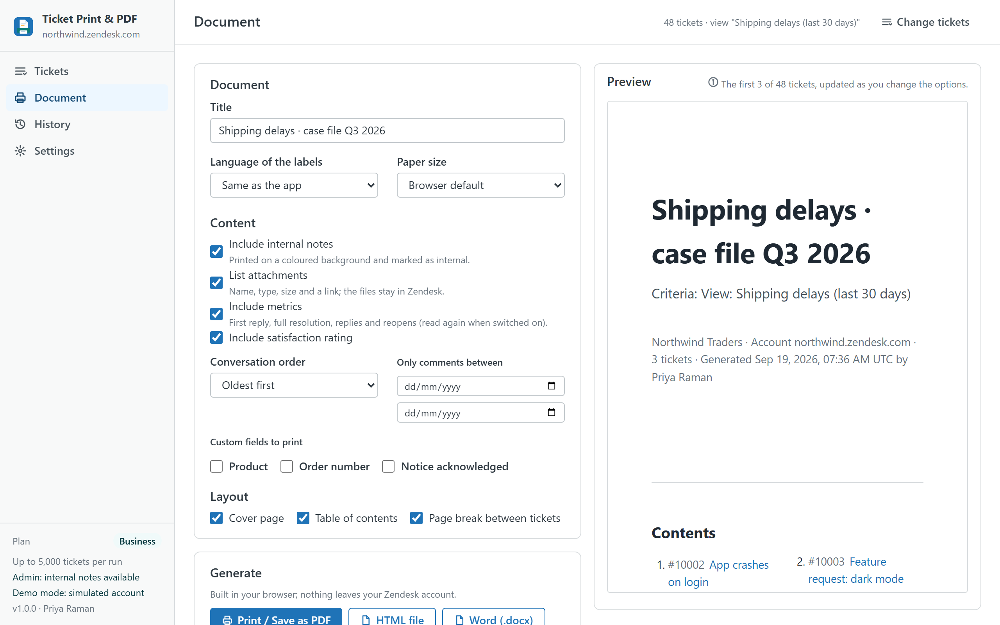
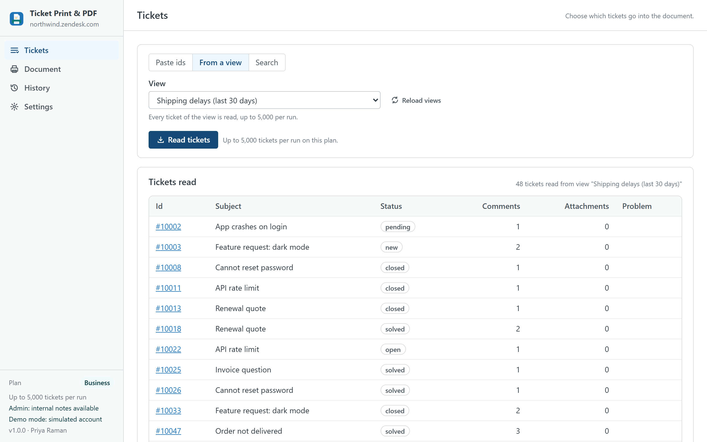
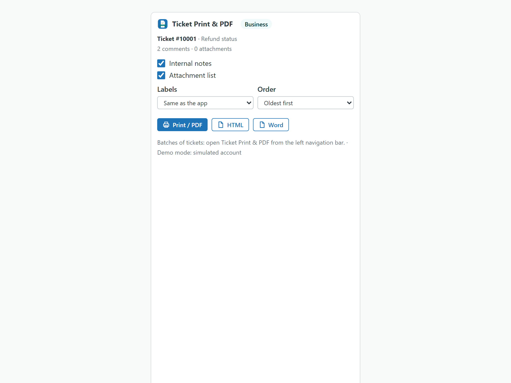

Ticket Print & PDF
Print or export a ticket, or thousands of them, from inside Zendesk Support and without a server: the whole conversation with public replies and internal notes marked, the attachments listed with links, a cover page and a table of contents, as PDF, Word, HTML or ZIP. One ticket from the ticket sidebar; batches from pasted ids, a view or a search with an exact count for the whole account.
Built as the replacement for Zendesk's Print Ticket History app, which stops working on 21 October 2026, and for the bulk printing the Agent Workspace does not offer. An independent app from a third-party developer, not affiliated with or endorsed by Zendesk.

What it does
- One ticket, two clicks. Open a ticket and the app is in the sidebar: Print / Save as PDF, HTML or Word for that ticket, with the options that matter there (internal notes, attachments, order, language of the labels).
- Batches from ids, a view or a search. Paste ticket ids or links (one per line, in any mix), pick any of your views, or build a search by status, priority, type, channel, dates, tags, requester, assignee, group, organization, brand, custom fields and text. The count is exact for the whole account because the app uses Zendesk's export endpoint, not the search endpoint that stops at 1,000.
- A complete page per ticket. Header with status, priority, type, channel, requester with e-mail, assignee, group, organization, brand, form, created, updated and solved dates, tags, the custom fields you pick, satisfaction rating with comment and, on request, first-reply and resolution metrics. Then the conversation in chronological or reverse order, each message with author, date, channel and a badge that says public reply or internal note (internal notes on a coloured background). Then the attachments with name, type, size and a link.
- Every format the situation asks for. Print / Save as PDF through your browser's dialog, a single HTML file, a Word document (.docx) that opens in Word, LibreOffice and Google Docs, a ZIP with one HTML file per ticket plus
index.csvandmanifest.json, and a CSV index on its own. - Cover, contents, branding. Cover page with title, criteria, account, count, date and author; table of contents with one link per ticket; page breaks; A4 or Letter; your logo, company name and footer.
- Trim what goes in. Internal notes on or off (admins decide whether agents may include them at all), attachments on or off, a date range that keeps only the comments of a period, the custom fields to print.
- For legal holds and archives. On Business every ticket file carries its SHA-256 hash in
index.csvandmanifest.json, runs of up to 5,000 tickets are split into ZIP files of 500 with a run manifest, and every generated document leaves an evidence record (who, when, criteria, ticket ids, files, hash) exportable as CSV. - History and presets. Every document is listed with a Repeat button that reads the same tickets again with the same options. Option presets can be saved in the browser (Pro) or shared with every agent of the account (Business).

What is in the document
| Part | Content | Option |
|---|---|---|
| Cover | Title, criteria (the view, the search or the ids), company, account, number of tickets, date, author, logo | Pro and up |
| Contents | One link per ticket with id and subject | Pro and up |
| Header | Status, priority, type, channel, requester and e-mail, assignee, group, organization, brand, form, created / updated / solved, tags, custom fields, satisfaction, metrics | Custom fields and metrics are opt-in |
| Conversation | Every comment with author, date, channel, public or internal badge; HTML bodies sanitised, images kept as links | Internal notes and order |
| Attachments | File name, type, size and a link that works for signed-in agents; redacted files marked | On or off |
| Footer | Your footer text and the list of tickets whose conversation could not be read | Pro and up |
Labels in the document (Status, Requester, Internal note, Attachments, Contents, Generated…) can be printed in English, Spanish, German, French or Portuguese, independently of the app language.

Plans
| Free | Pro · $19 | Business · $49 | |
|---|---|---|---|
| Tickets per document | 1 | 500 | 500 |
| Tickets per run | 1 | 500 | 5,000 (in files of 500) |
| Sources | The open ticket, one pasted id | Ids, views, searches | Ids, views, searches |
| Formats | Print / PDF, HTML | Print / PDF, HTML, Word, ZIP, CSV index | Print / PDF, HTML, Word, ZIP, CSV index |
| Internal notes, attachments list, date range, custom fields, metrics, five label languages | ✓ | ✓ | ✓ |
| Cover page, contents, logo, company name, footer | — | ✓ | ✓ |
| Option presets | — | In the browser | Shared with the account |
| SHA-256 hash manifest | — | — | ✓ |
| Evidence records with CSV export | — | — | ✓ |
| History | Last 20 documents | Unlimited | Unlimited |
| Priority support (one business day) | — | — | ✓ |
| Free trial | 14 days | 14 days |
Prices are per month per Zendesk account, not per agent, billed through the Zendesk Marketplace and cancellable from Admin Center at any time. A 30-agent team pays $19, not $30.
Compared with native printing and with per-agent apps
| Ticket Print & PDF | Agent Workspace print (browser) | Print Ticket History (retired) | Per-agent PDF apps | |
|---|---|---|---|---|
| Pricing | Per account, from $0 | Included | Free, stops 21 October 2026 | About $1 per agent per month, or vendor-hosted |
| Batches (a view, a search, a list of ids) | ✓ up to 5,000 per run | — | — | Some, per ticket in most |
| Internal notes marked | ✓ (admins decide for agents) | Depends on what is on screen | ✓ | Varies |
| Attachments listed with links | ✓ | — | — | Varies |
| Word, HTML, ZIP, CSV index | ✓ | — | — | Mostly PDF only |
| Cover, contents, logo, footer | ✓ (Pro) | — | — | Some |
| Hash manifest and evidence | ✓ (Business) | — | — | — |
| Where your data goes | Stays in your Zendesk account and the agent's browser | Stays in Zendesk | Stayed in Zendesk | Vendor servers for some |
Competitor details are from public listings and Zendesk's documentation in September 2026 and may change; check their pages before deciding. The longer guide on what to use when Print Ticket History stops.
Privacy
The app has no server. It reads tickets, comments, attachment metadata, users, organizations, groups, brands, forms, ticket fields and views through the Zendesk API with the signed-in agent's session, only when you ask, and never writes to tickets. Documents are built in memory and printed or saved by your browser. Attachments are linked, not embedded: a browser cannot read them from inside an app without exposing the agent's session, so every document lists them with name, type, size and a link that works for signed-in agents. History, evidence, presets and settings live in the browser's local storage and can be cleared from Settings; the agent permission and the shared presets live in the app's own installation setting inside your account. Nothing is sent to the developer or to any third party; there are no analytics, cookies or AI services. The same privacy policy and terms as Help Center Doctor apply.
Install
- Open the listing on the Zendesk Marketplace (link added once the listing is approved), click Install and choose a plan. You need to be a Zendesk admin.
- Choose the roles or groups that may use the app, then click Install.
- Open any ticket: the app is in the sidebar. For batches, open Ticket Print & PDF from the left navigation bar, read the tickets and go to Document.
- In Settings, decide whether agents may include internal notes in documents. The choice is shared with the whole account.
Frequently asked questions
Is the PDF a real PDF? The app builds a print-ready HTML document and opens it with a "Print or save as PDF" button; your browser's own PDF engine writes the file, with page breaks, a cover and a linked table of contents. There is no PDF library in the app, which is also why nothing leaves your account.
Are attachments inside the PDF? No. Browsers cannot read attachment files from inside a Zendesk app, so the documents list every attachment with its name, type, size and a link that works for signed-in agents. The listing, the app and this page say so.
Can agents print internal notes? Admins always can. For agents there is one switch in Settings, shared with the whole account through the app installation: on by default, off if your policy says so. When it is off, agents get the public conversation only and the option is greyed out for them.
How many tickets at once? One on Free, 500 per document on Pro, 5,000 per run on Business (HTML, Word and ZIP are split into files of 500; Print / PDF handles up to 500 in one window). Reading 5,000 tickets with their conversations takes a few minutes at Zendesk's normal rate; the tab has to stay open.
What is the hash manifest for? Legal holds and archives: manifest.json names every file with its SHA-256 and index.csv repeats it per ticket, so anyone can verify later that a file has not changed since it was generated. Business only.
Does it replace Print Ticket History? Yes for what that app did (one ticket, the conversation, print), and it adds what it never had: batches, Word and ZIP, attachment links, cover and contents, a hash manifest. The migration guide.
Also from the same developer: Data Custodian searches, exports, changes, deletes and redacts tickets with evidence; Proactive Outreach creates one proactive ticket per customer; Help Center Doctor finds and fixes broken links, missing images, stale content and structure problems; Help Center Print & Export turns articles into PDF, Word, HTML, Markdown, ZIP and CSV.
Support: support@helpcenterdoctor.app, answered within one business day.